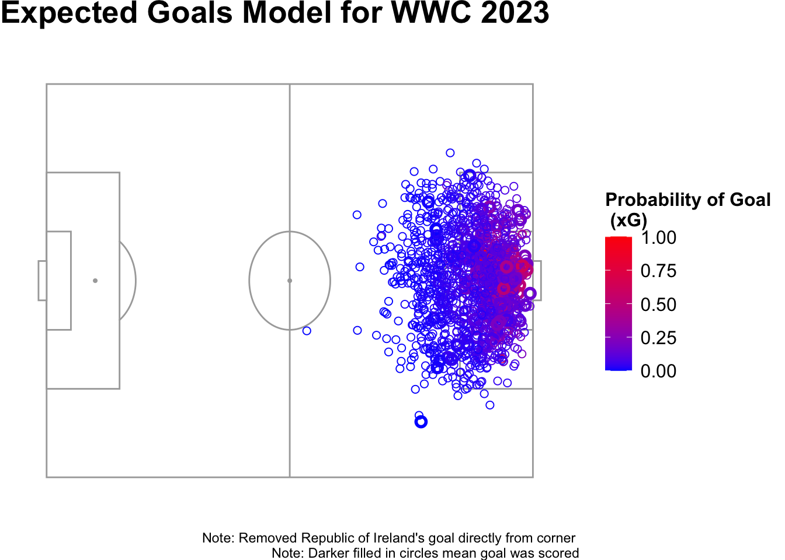

Building an Expected Goals Model for 2023 WWC
Introduction
Hello, welcome back to my blog! As an avid soccer fan, I decided to build an expected goals model for the 2023 Women’s World Cup using logistic regression. I have always wanted to build an expected goals model because I have heard from attending various sports analytics conferences that expected goals (xG) is a better metric for understanding the overall performance of a player than basic statistics like shots, shots on target and possession. A higher xG means that the shot has a higher probability of being a goal and is considered a high quality shot. If a player has a high total xG then this means that they took high probability shots and were well involved in the game. The expected goals metric (xG) helps identify players that played really well and created dangerous chances but might not have scored.
The data set that I used to create my expected goals model came from a R package called StatsBombR. This is a free package in R that contains open sourced event data from various soccer competitions. Here is a link to the GitHub repository site for StatsBomb R. Click here.
The variables I used for my logistic regression model are:
| variables | description |
|---|---|
| goal | 1 if Yes, 0 if No |
| id | specific id for identifying shot in StatsBombR database |
| distance.to.gk | the distance in meters from shot location to goalkeeper |
| DistToGoal | the distance in meters from shot location to goal |
| angle.to.gk | the angle in degrees from shot location to goalkeeper |
| angle.to.goal | the angle in degrees from shot location to goal |
| play_pattern.name | type of play (From Free Kick, From Corner, From Goal Kick, From Throw In, Regular Play, From Counter, From Keeper, Other) |
| shot.body_part.name | type of body part used for shot (Right Foot, Left Foot, Head, Other |
| shot.technique.name | name of shot type (Half Volley, Normal, Volley, Lob) |
My questions of interest for this blog are:
Which area on the soccer field has the highest probability of scoring a goal and why?
Which players have the highest total xG scoring rates from the tournament?
Shot Locations from WWC 2023
This visualization displays the overall location on the field where all of the shots from the WWC 2023 were taken from. I colored the points by the xG values from the logistic regression model. Also, I darkened the fill of the circle if the shot was actually a goal. Additionally, I removed the Republic of Ireland’s goal scored directly from a corner kick because that data point skewed the rest of the data as it was given a really high xG value as a result. Scoring from a corner kick is a rare event and therefore its xG value should be lower rather than higher. The logistic regression model that I built only has 1540 shots, so given that very few goals from a corner are successful and one of them happened to be in this data set, a higher xG value was given to that point. I decided that it was best to remove this data point from the data so the other data points were not skewed anymore. Overall, I see from the visualization that the closer the shot is to the goal, the higher the probability of the shot turning into a goal. I see more red circles (higher xG values) closer to the goal, while more blue circles (lower xG values) are farther away from the goal.
Highest Total xG Scoring Rates from Model
I was interested in seeing which players from the tournament have the highest total xG scoring rates predicted by the model. Total xG is calculated by adding together the xG values for each shot that the player took. A high total xG means that the player took quality shots that had a high probability of resulting in a goal.
| player | total_xG | total_shots | xG_per_shot | goals |
|---|---|---|---|---|
| Alba María Redondo Ferrer | 2.6322 | 17 | 0.15 | 3 |
| Alexandra Morgan Carrasco | 2.5263 | 15 | 0.17 | 0 |
| Thembi Kgatlana | 2.4761 | 18 | 0.14 | 2 |
| Alessia Russo | 2.2031 | 22 | 0.10 | 3 |
| Kadidiatou Diani | 2.1963 | 16 | 0.14 | 2 |
From the table, it is evident that Alba María Redondo Ferrer from Spain has the highest total xG of 2.632. This means that the shots that she took were high quality ones that had a high probability of resulting in a goal.
From the interactive shot map, I see that almost all of her 17 shots are from within the 18 yard box and are mainly centered. Like mentioned above, I know that being within the 18 yard box significantly increases the probability of scoring. I also see that she has some pretty high xG values associated with her shots of 0.34 and 0.294 respectively.
Additionally, I see from the table above that Alexandra Morgan Carrasco (Alex Morgan) from the United States has the second highest total xG. It is interesting how she has the second highest total xG but did not score any goals at the tournament. This is a prime example of why we use an expected goals model and calculate the xG value associated with each shot instead of solely relying on statistics like total goals as a metric for evaluating player performance. Total xG helps better highlight a player’s performance and the quality of chances that they created. People might say that Alex Morgan had a terrible tournament because she did not score any goals, but the expected goals model and the xG values beg to differ.
From the interactive shot map, it is clear that all of Alex Morgan’s shots are from well inside the 18 yard box. Additionally, it is evident that she created two really great opportunities to score as both shots (colored pink) have a xG value of around 0.42.
Wrap Up
In this blog post, I explored goal probabilities using an expected goals model for the 2023 Women’s World Cup. I found that the optimal location for scoring a goal is from within the 18 yard box. Additionally in this blog post, I showed why xG is an effective metric for measuring a player’s performance and why total shots and goals might not be. Overall, I thoroughly enjoyed learning about and building my own expected goals model. It is a relatively simple process, so I highly recommend if interested trying to make one by yourself using a data set of perhaps your favorite soccer league! In the future, I hope to get more data to use to increase the accuracy of the model as typically an expected goals model has each shot compared to at least 1000 shots of similar characteristics.
Thanks for reading!